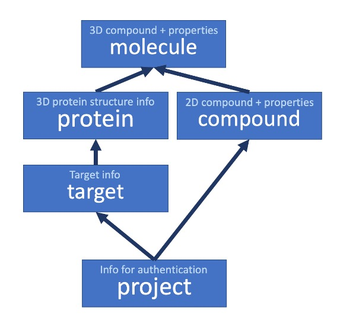

Crystallographic data (Models)¶
Schema overview¶
[Explain schema]
Model details¶
-
class
viewer.models.Project(*args, **kwargs)¶ Django model for holding information about a project. This is used on the Targets level, adding a new project for each target, and saving a list of users that can access a target during the authentication step
- Parameters
title (
CharField) – The title of the projectinit_date (
DateTimeField) – The date the project was initiated (autofield)user_id (
ManyToManyField) – Links to the User model
-
class
viewer.models.Target(*args, **kwargs)¶ Django model to define a Target - a protein.
- Parameters
title (
CharField) – The name of the targetinit_date (
DateTimeField) – The date the target was initiated (autofield)project_id (
ManyToManyField) – Links targets to projects for authenticationuniprot_id (
Charfield) – Optional field where a uniprot id can be storedmetadata (
FileField) – Optional file upload defining metadata about the target - can be used to add custom site labelszip_archive (
FileField) – Link to zip file created from targets uploaded with the loader
-
class
viewer.models.Protein(*args, **kwargs)¶ Django model for holding information about a protein. A protein is a protein structure which has a unique set of 3D coordinates, rather than a target, which is a set of protein objects of the same protein. A Molecule object is also linked to a protein, so that a complete structure is comprised of the molecule and protein in separate parts in fragalysis.
- Parameters
code (
CharField) – A unique name for the protein (e.g. NUDT5A-x0001_1)target_id (
ForeignKey) – Foreign key linking the protein to it’s targetapo_holo (
NullBooleanField) – 0 for apo (ligand removed), 1 for holo (ligand in tact)prot_type (
CharField) –protein type - from a pre-defined list and determined by file extension on upload (defined in loader.config.get_prot_choices):
prot_choices = ( (APO, “Apo”, “_apo.pdb”, “APO”), (STRIPPED, “Stripped”, “_no_buffer_altlocs.pdb”, “STRIPPED”), (TLEAPED, “Tleaped”, “_tleap.pdb”, “TLEAP”), (CHUNKED, “Chunked”, “_chunk.pdb”, “CHUNK”), (BOUND, “Bound”, ‘_bound.pdb’, “BOUND”) )
pdb_info (
FileField) – File link to apo pdb structure - pdb file with ligand removedbound_info (
FileField) – File link to bound state structure - same as apo pdb but with ligand in-tactcif_info (
FileField) – File link to cif file for ligand restraints (optional)mtz_info (
FileField) – File link to uploaded mtz file (optional)map_info (
FileField) – File link to uploaded map file (optional)aligned (
NullBooleanField) – Bool - 1 if aligned, 0 if notaligned_to (
ForeignKey (self)) – Foreign key to another instance of a protein to which this protein is aligned (optional)has_eds (
NullBooleanField) – Bool - 1 if has ED, 0 it not (optional)
-
class
viewer.models.Compound(*args, **kwargs)¶ Django model for holding information about a compound, which is a unique 2D molecule
- Parameters
inchi (
CharField) – The inchi key of the compoundlong_inchi (
TextField) – For historical reasons, the inchifield cannot be removed, but has a max limit of 255 characters. If the inchi key for a compound is longer than this, it is stored in the long_inchi field, and the inchi key is concatenated to the first 255 characters. (optional) TODO: Use a method to get the inchi keysmiles (
Charfield) – The SMILES string representation of the compoundcurrent_identifier (
Charfield) – The identifier for this compound that is used in Fragalysis to represent it’s 3D molecule (optional)all_identifiers (
TextField) – A comma separated list of all identifiers that have been used in the past to represent this 2D compoundproject_id (
ManyToManyField) – Many to Many foreign key relationship to all projects that this compound is associated to (prevents duplication of compounds across multiple targets)mol_log_p (
FloatField) – Computed LogP value (from rdkit)mol_wt (
FloatField) – Computed molecular weight (Da) (from rdkit)tpsa (
FloatField) – Computed Topological Polar Surface Area (from rdkit)heavy_atom_count (
IntegerField) – Computed heavy (non-hydrogen) atom count (from rdkit)heavy_atom_mol_wt (
FloatField) – Computed molecular weight of all heavy (non-hydrogen) atoms (from rdkit)nhoh_count (
IntegerField) – Computed number of hydroxylamine groups (from rdkit)no_count (
IntegerField) – Computed number of nitroso groups (from rdkit)num_h_acceptors (
IntegerField) – Computed number of hydrogen-bond acceptor groups (from rdkit)num_h_donors (
IntegerField) – Computed number of hydrogen-bond donor groups (from rdkit)num_het_atoms (
IntegerField) – Computed number of heterogeneous atoms (from rdkit)num_rot_bonds (
IntegerField) – Computed number of rotatable bonds (from rdkit)num_val_electrons (
IntegerField) – Computed number of valence electrons (from rdkit)ring_count (
IntegerField) – Computed number of rings in the molecule (from rdkit)inspirations (
ManyToManyField) – Foreign key link to any number of 3D Molecules that inspired the design of this compounddescription (
TextField) – A description of the compound added by a user (optional)comments (
TextField) – A free-text comments field (optional)
-
class
viewer.models.Molecule(*args, **kwargs)¶ Django model for holding information about a Molecule. A molecule is linked to a compound, and represents the unique 3D coordinates for that molecule. Note a compound can be linked to multiple molecules, each with a different 3D structure, but the same 2D structure
- Parameters
smiles (
CharField) – The smiles string of the molecule. (optional) TODO: Check if this is needed…lig_id (
CharField) – The ligand ID from the pdb file it originated from (e.g. LIG 1 A) (optional)chain_id (
CharField) – The chain from the protein structure pdb file that this ligand is from (e.g. A) (optional)mol_type (
CharField) –molecule type - from a pre-defined list and determined by file extension on upload (defined in loader.config.get_mol_choices): mol_choices = ( (PROASIS, “Proasis molecule”, “.mol”, “MOL”), (SDF, “Sdf molecule”, “.sdf”, “SDF”), (HYDROGEN, “Hydrogens added “, “_h.mol”, “H_MOL”), (
HYDROGEN_AM1_CHARGES, “Mol2 format with Hydrogens and AM1 BCC”, “.mol2”, “MOL2”,
), )
sdf_info (
TextField) – The 3D coordinates for the molecule in MDL (mol file) format. Taken directly from the uploaded filerscc (
FloatField) – The RSCC score of the molecule 3D coordinates vs. PANDDA event map (optional)occupancy (
FloatField) – The occupancy (electron density) of the molecule (optional)x_com (
FloatField) – x-coordinate for centre of mass (optional)y_com (
FloatField) – y-coordinate for centre of mass (optional)z_com (
FloatField) – z-coordinate for centre of mass (optional)rmsd (
FloatField) – RMSD of this molecule compared to ? (optional - unused)prot_id (
ForeignKey) – Foreign key link to the associated protein (apo) that this ligand was pulled fromcmpd_id (
ForeignKey) – Foreign key link to the associated 2D compoundhistory (
HistoricalRecords) – Tracks the changes made to an instance of this model over time